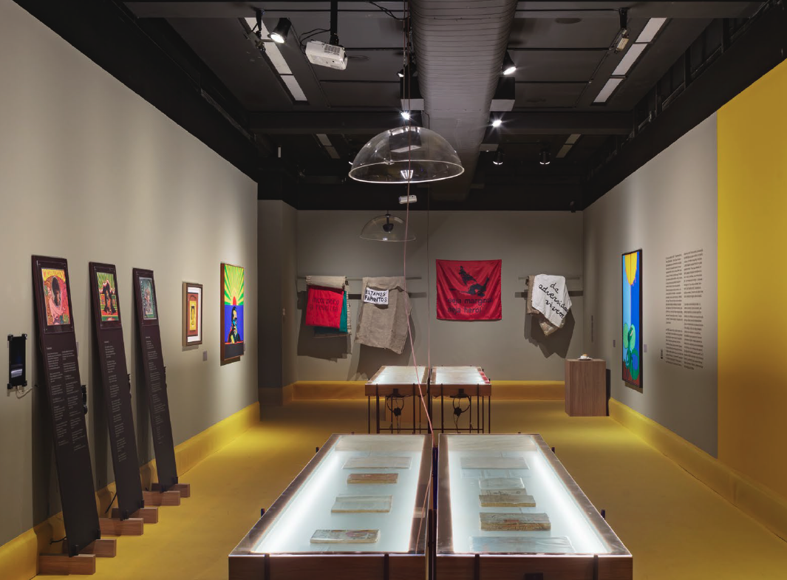
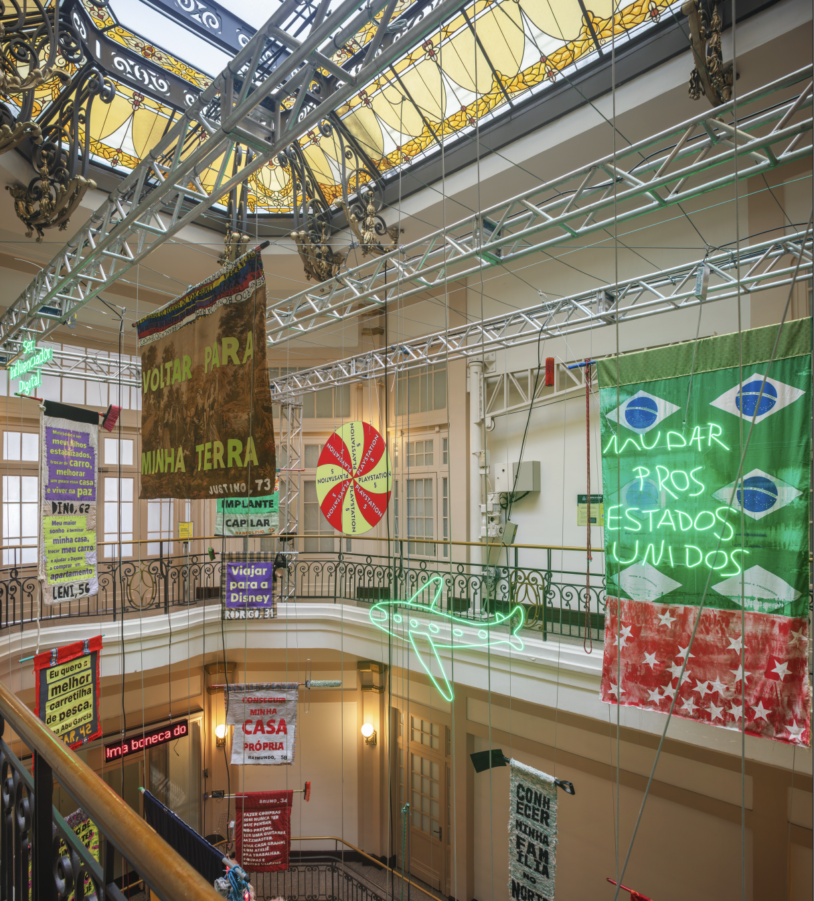

Art direction by Gabriel Menezes
Signage by Cecília Cartaxo
Curated by Moacir dos Anjos
Produced by Tuia arte e produção
Photography by Diego Bresani
2024 - 2025
About
Underdeveloped Art (Arte Subdesenvolvida) was an exhibition that explored Brazilian artistic production from the 1930s to the 1980s, reflecting the country's political and cultural history through the work of over 20 artists. The show was presented at various CCBB (Centro Cultural Banco do Brasil) branches, including São Paulo, Rio de Janeiro, Belo Horizonte, and Brasília.
During the decades covered by the exhibition, Brazil's economy, politics, and culture were marked by the concept of underdevelopment. During this period, works were produced that reflected the country's socioeconomic conditions, revealing how a generation of artists perceived and responded to the realities of poverty, inequality, and structural differences. The exhibition highlights how these artists used their work as a form of protest and critical reflection.
What I did
spatial planning, signage, large-format pieces, prepress/finalizing files for printing, promotional materials




